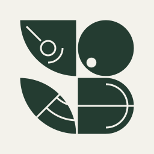

HASTERRADSHIP / SYLLABLE / SIGNAL
Disconnected

PILOTAwaiting ship
SYLLABLES / LIVES
—
LEVEL—
SCORE—
Awaiting signal
Open from your ship’s existing session. No separate game sign-in.
One active game tab per ship. Closing another game tab may pause this session. Rounds end when syllable-based lives reach zero, with no forced gameplay time limit. Hidden/disconnected controls release; network loss idles within 3 seconds.